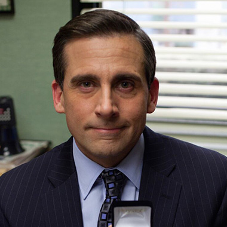
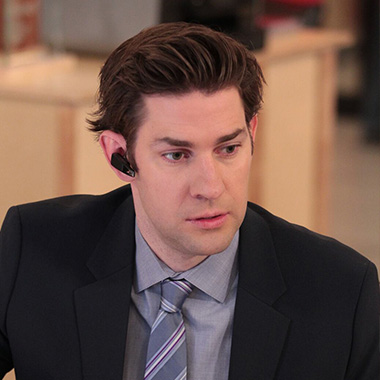
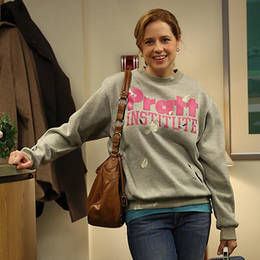
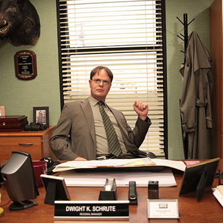
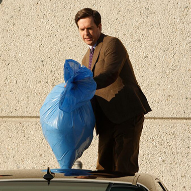
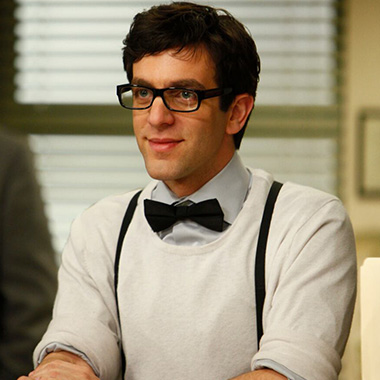
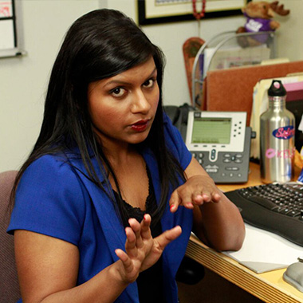
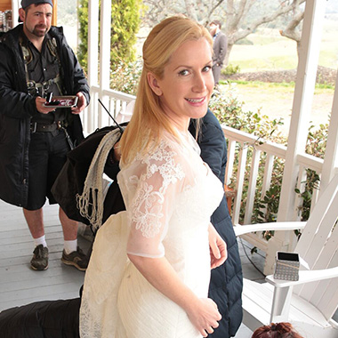
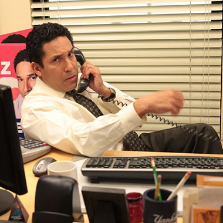

10 Main Characters
Each one plays a pivotal roles throughout the series. These characters are central to the show's storyline and are featured prominently in most episodes.
Meet The Actors
Explore the talented ensemble behind 'The Office,' learning about their careers, character portrayals, and off-screen contributions that made the show a classic.

Michael Scott (Steve Carell)

Jim Halpert (John Krasinski)

Pam Beesly (Jenna Fischer)

Dwight Schrute (Rainn Wilson)

Andy Bernard (Ed Helms)

Ryan Howard (B.J. Novak)

Kelly Kapoor (Mindy Kaling)

Angela Martin (Angela Kinsey)

Oscar Martinez (Oscar Nunez)